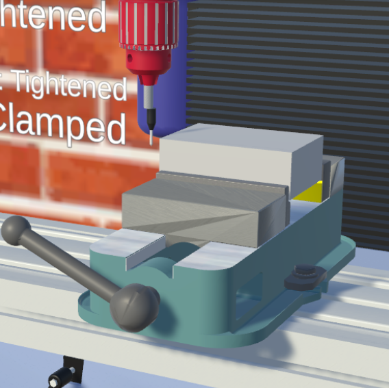

Research · Machinning in the Dorm Room
a VR and Desktop Manual Milling Trainning Application

Close up of secured block and edgefinder
US manufacturing provides high wage jobs, and is a key industry contributing to commercial innovation and environmental sustainability. However, due to the inadequacy of widespread engineering training, there is currently a severe labor shortage in this field. More specifically, according to the U.S. Chamber of Commerce , even if every skilled manufacturer in the US is employed, there will still be 35% jobs unfilled.
I'm working as part of the MIT Learning Engineering and Practice Group to develop Machining in the Dorm Room, a Desktop and VR application developed to improve training in milling. We aim at making it more scalable and affordable through increasing the accessibility of this training by decreasing the resources machining training calls for in terms of money (for the machine, material, hiring professionals, etc.) and time.
In this project, I work as the main programmer. I debugged and improved the performance of existing features and mechanics with comprehensible code and build structures. On top of modeling part of the manual mill, some significant functions I implemented are an edge finder popout logic and all individual modules including the instructional, assessment, and safety module. On top of debugging and implementing functions in both the desktop and VR application, I also have freedom to design parts of the application. This gives me the ability to tackle this open ended question through researching concepts like game-based learning.
Through accurate simulation and employment of aforementioned principles, we aim at making this application realistic and thus immersive, and ultimately help users learn more effectively and generate more interest than other traditional ways of training. With the same goal, I’m currently researching principles of error-based (as opposed to error free) learning and elements of digital simulation-based training such as the narrative and user control, and how they influence how the users learn.
Co-writing submission to ASEE conference by spring 2023.